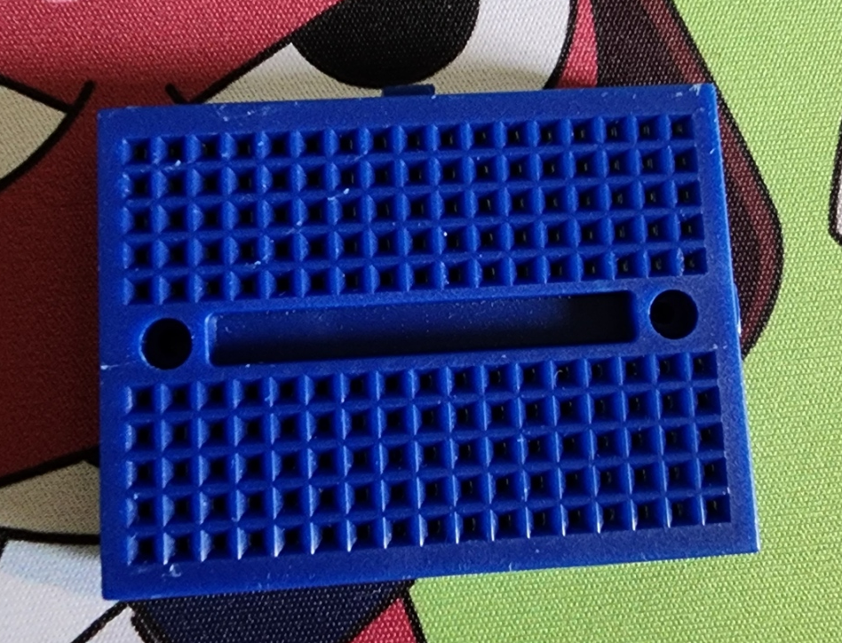
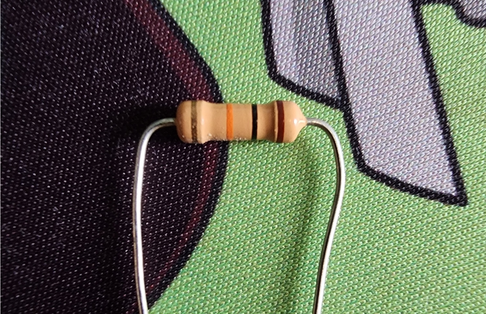
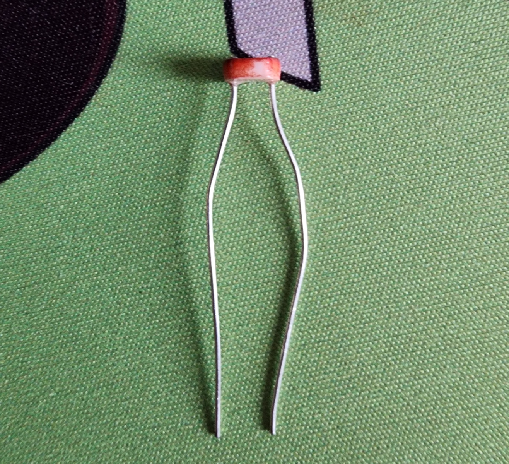
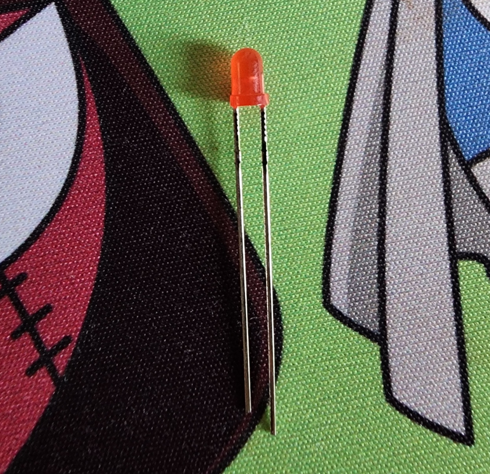

Arduinoとは
Arduinoとは、マイクロコントローラを搭載したマイコンボードと
そのプログラムを作成・書き込むための総合開発環境から構成される
オープンソースの電子工作プラットフォームである。
arduinoサイト
今回の使用部品
ブレッドボード
はんだ付け不要で電子部品やジャンパ線（導線）を穴に差し込むだけで、簡単に電子回路の試作・実験ができる基板のこと。
昔の人たちはパン（Bread）を切る板（Board）に電子部品を固定して実験をしていたらしく、その名残でブレッドボードという名前になっているそうです。
参考サイト

抵抗器
抵抗器は電気を流れにくくする電子部品です。
流れる電気の量を制限したり調整したりすることで、
電子回路を適正に動作させる役割をもつ大切な部品です。

Cdsセル
光の強さに応じて抵抗値が変化する「光導電セル（フォトレジスタ）」と呼ばれる電子部品です。
明るい場所では低抵抗（数kΩ）、暗い場所では高抵抗（数MΩ）になる特性を持ち、街灯の自動点灯や明るさセンサーとして広く使われています。

LED
通称・発光ダイオード
今回使ったのは砲弾型赤色LEDというらしい、なんかかっこいい。
足の長さで極性が判断でき、長い方が＋(アノード)、短い方が－(カソード)
